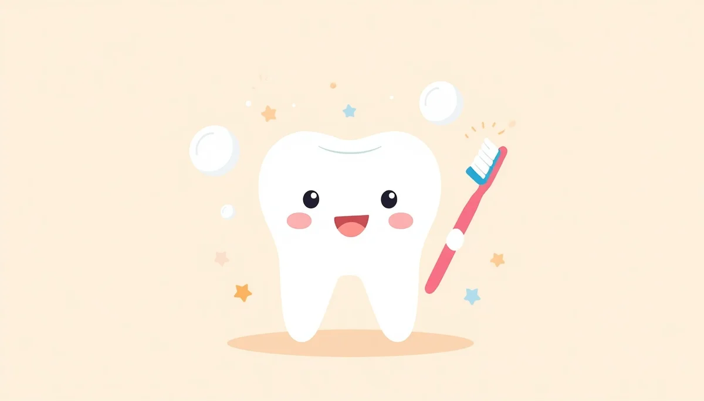

Prevención de Caries y Hábitos Nocivos
Tercera parte de la guía: cómo evitar la caries de la infancia temprana, el impacto de la alimentación azucarada y el manejo del chupete y la succión digital.

Índice de la Tercera Parte
Contenidos de prevención:
1. Qué es la caries de la infancia temprana y por qué se produce
La caries de la infancia temprana (antiguamente conocida como "caries del biberón") es una patología infecciosa destructiva muy agresiva que puede afectar a los dientes temporales casi desde el momento de su erupción. Comienza habitualmente en los incisivos superiores con la aparición de manchas blanquecinas o marrones sin brillo que, si no se frenan a tiempo con flúor e higiene, evolucionan con rapidez hacia la destrucción y cavitación de la pieza dental.
2. El papel crítico de los azúcares libres en la dieta infantil
El principal motor del desarrollo de la caries dental es la frecuencia y cantidad de exposición a los azúcares libres (incluyendo azúcares añadidos en alimentos procesados, zumos comerciales, galletas, bollería e incluso la fructosa libre de los zumos de fruta naturales). Los ácidos generados por las bacterias de la boca al metabolizar estos azúcares desmineralizan el esmalte de manera constante.
- • Evitar por completo añadir azúcar, miel o cacao soluble a la leche del biberón o a las papillas.
- • No permitir que el bebé se duerma con el biberón de leche, zumo o infusiones azucaradas en la boca, ya que el flujo salival desciende drásticamente durante el sueño y el líquido se estanca sobre los dientes.
- • Priorizar alimentos frescos, enteros y agua como bebida principal frente a cualquier alternativa azucarada.
3. Uso del chupete y succión digital: cuándo y cómo retirarlos
El reflejo de succión es completamente natural en los lactantes y aporta un efecto tranquilizador, pero su mantenimiento prolongado puede deformar la estructura de los maxilares y la posición de los dientes (generando mordida abierta anterior o mordida cruzada).
- • Se recomienda limitar y retirar progresivamente el uso del chupete antes de los 12 o 18 meses de edad para minimizar alteraciones ortodóncicas permanentes.
- • Respecto a la succión del dedo pulgar, suele ser un hábito más difícil de erradicar al estar disponible de forma constante, por lo que se aconseja intervenir con refuerzo positivo y apoyo emocional antes de que se consolide de cara a la dentición mixta.
4. Precauciones con la saliva de los adultos
Las bacterias responsables de la caries dental (principalmente *Streptococcus mutans*) no están presentes de forma nativa en la boca estéril del recién nacido, sino que se transmiten habitualmente a través de la saliva de los cuidadores.
Para prevenir esta colonización temprana, se debe evitar limpiar el chupete con la propia saliva, soplar directamente sobre la comida del niño con cubiertos que ya se hayan usado, o compartir vasos y utensilios sin un lavado previo.
Clave preventiva: Una correcta higiene dental nocturna con pasta fluorada neutraliza los efectos nocivos puntuales del día, pero cuidar la dieta y evitar la exposición continua a azúcares es la base definitiva para mantener una sonrisa sana.